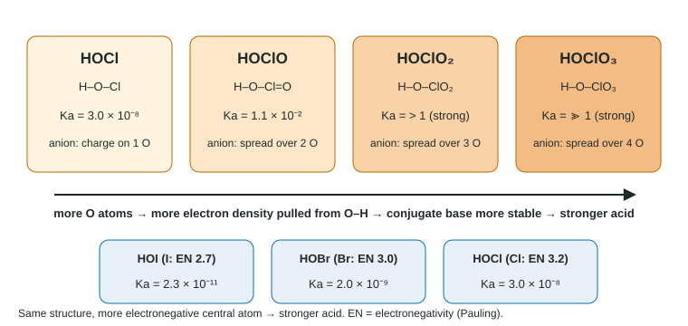

Molecular Structure of Acids and Bases
An acid is strong when the ion it leaves behind is stable.
Part 1 · Hook
Why this matters
Part 2 · Before you start
What this builds on
Part 3 · Prerequisite check
Quick check before you start
1. Which atom is most electronegative?
- F
- Cl
- O
- N
Show the answer
Fluorine has the highest electronegativity of all elements (4.0).
- Correct: F:
- Cl:
- O:
- N:
2. What do the two resonance structures of the acetate ion, CH₃COO⁻, show?
- The negative charge is shared between the two O atoms
- The ion switches back and forth between two shapes
- One O atom always carries the charge
- The C atom carries the negative charge
Show the answer
Resonance structures describe one real ion in which the charge is delocalized over both O atoms.
- Correct: The negative charge is shared between the two O atoms:
- The ion switches back and forth between two shapes:
- One O atom always carries the charge:
- The C atom carries the negative charge:
3. HA has Ka = 1 × 10⁻⁴ and HB has Ka = 1 × 10⁻⁸. Which is the stronger acid?
- HA
- HB
- They are equal
- It depends on concentration
Show the answer
A larger Ka means the acid ionizes more.
- Correct: HA:
- HB:
- They are equal:
- It depends on concentration:
Part 4 · See it
See it first

Part 5 · Step by step
How it works, step by step
- An acid HA gives up H⁺ and leaves A⁻ behindthe more stable A⁻ is, the further HA + H₂O ⇌ H₃O⁺ + A⁻ lies to the right
- Electronegative atoms near the acidic group pull electron density toward themselvesthe negative charge of A⁻ is less concentrated, so A⁻ is more stable and Ka is larger
- Resonance spreads the charge of A⁻ over several atomscarboxylic acids are far stronger than alcohols, and oxyacids with more O are stronger
- Down a group, the bond to H gets longer and weakerHF < HCl < HBr < HI and H₂O < H₂S < H₂Se in acid strength
- An amine N has a lone pairamines are weak bases that accept a proton on nitrogen
Part 6 · Key ideas
Key ideas
- Acid strength follows conjugate base stability. Stabilize A⁻ and Ka goes up.
- Oxyacids: more O atoms, or a more electronegative central atom, means a stronger acid (HOI < HOBr < HOCl < HOClO).
- Carboxylic acids: the carboxylate is stabilized by resonance; electron-withdrawing groups (Cl, F) nearby make the acid stronger.
- Binary acids: across a period electronegativity rules (CH₄ < NH₃ < H₂O < HF); down a group bond strength rules (HF < HCl < HBr < HI).
- Amines (–NH₂) are weak bases: the proton goes on the N lone pair.
Part 7 · Misconception
A common mistake
The wrong idea: More hydrogen atoms in a formula make a stronger acid.
What actually happens: Only hydrogens that can leave as H⁺ count, and strength depends on how stable the conjugate base is. CH₄ has four H atoms and is not acidic; HCl has one and is strong.
Part 8 · Check yourself
Check yourself
Exam-style questions. Anything you miss goes into your review queue.
Data table
Acetic acid and three substituted versions
Each acid loses the H on its –COOH group. In the substituted acids, one or two H atoms on the CH₃ carbon are replaced by halogen atoms.
| Acid | Condensed formula | Ka |
|---|---|---|
| Acetic acid | CH₃COOH | 1.8 × 10⁻⁵ |
| Chloroacetic acid | ClCH₂COOH | 1.4 × 10⁻³ |
| Dichloroacetic acid | Cl₂CHCOOH | 5.5 × 10⁻² |
| Fluoroacetic acid | FCH₂COOH | 2.6 × 10⁻³ |
1. Why is chloroacetic acid a stronger acid than acetic acid?
- Electronegative Cl draws electron density away and stabilizes the conjugate base
- The Cl atom gives the molecule a second acidic hydrogen atom that can ionize too
- Chloroacetic acid has a larger molar mass, so its O–H bond is longer
- The Cl atom makes the C=O bond into a single bond, which releases the proton
Show the answer
An electron-withdrawing Cl two carbons away draws electron density from the –COO⁻ group, so the negative charge of ClCH₂COO⁻ is less concentrated and the ion is more stable. A more stable conjugate base means a larger Ka.
- Correct: Electronegative Cl draws electron density away and stabilizes the conjugate base: Right: electron withdrawal stabilizes the conjugate base.
- The Cl atom gives the molecule a second acidic hydrogen atom that can ionize too: The acidic H is still the one on –COOH; Cl replaces a C–H hydrogen, which is not acidic.
- Chloroacetic acid has a larger molar mass, so its O–H bond is longer: Molar mass does not set acid strength; the effect comes from electronegativity.
- The Cl atom makes the C=O bond into a single bond, which releases the proton: The C=O bond is still there; Cl changes electron density, not the bonding pattern.
2. Fluoroacetic acid has a larger Ka than chloroacetic acid. What does this show?
- A more electronegative substituent gives a stronger acid
- A larger halogen atom in the same position gives a stronger acid
- The H–F bond in fluoroacetic acid ionizes
- Fluorine adds extra resonance structures to the conjugate base
Show the answer
F (electronegativity 4.0) pulls harder than Cl (3.2), so FCH₂COO⁻ is more stabilized and FCH₂COOH ionizes more.
- Correct: A more electronegative substituent gives a stronger acid: Right: the stronger the pull, the more stable the anion.
- A larger halogen atom in the same position gives a stronger acid: F is smaller than Cl, yet its acid is stronger, so size is not the cause here.
- The H–F bond in fluoroacetic acid ionizes: There is no H–F bond: F is bonded to carbon, and the acidic H is on –COOH.
- Fluorine adds extra resonance structures to the conjugate base: F does not create new resonance forms of the carboxylate; its effect is a pull through the bonds.
3. What is the pH of 0.10 M chloroacetic acid? (Check the small-x assumption.)
Type a number.
Show the answer
Small x: √(1.4 × 10⁻³ × 0.10) = 1.2 × 10⁻² M, 12% of 0.10, too large. Quadratic: x² + (1.4 × 10⁻³)x − 1.4 × 10⁻⁴ = 0 gives x = 1.12 × 10⁻² M; pH = 1.95.
- Answer: 1.95
4. Trichloroacetic acid, Cl₃CCOOH, is not in the table. Which Ka is most consistent with the trend?
- 2.2 × 10⁻¹
- 5.5 × 10⁻²
- 1.4 × 10⁻³
- 1.8 × 10⁻⁷
Show the answer
Each Cl added pulls more electron density from the carboxylate, so Ka rises with every substitution: 1.8 × 10⁻⁵ → 1.4 × 10⁻³ → 5.5 × 10⁻² → larger still for three.
- Correct: 2.2 × 10⁻¹: Right: three Cl atoms, the largest Ka of the series.
- 5.5 × 10⁻²: That is the value for two Cl atoms; a third Cl should increase it.
- 1.4 × 10⁻³: That is the value for one Cl atom.
- 1.8 × 10⁻⁷: This would make it weaker than acetic acid, against the trend.
Data table
Oxyacids of chlorine and the halogens
In every acid below the acidic H is bonded to an O atom, and that O is bonded to the central atom (H–O–X). Electronegativity values are on the Pauling scale.
| Acid | Structure | Central atom electronegativity | Ka |
|---|---|---|---|
| HOCl | H–O–Cl | 3.2 | 3.0 × 10⁻⁸ |
| HOClO | H–O–Cl–O | 3.2 | 1.1 × 10⁻² |
| HOBr | H–O–Br | 3.0 | 2.0 × 10⁻⁹ |
| HOI | H–O–I | 2.7 | 2.3 × 10⁻¹¹ |
5. Why is HOClO a much stronger acid than HOCl?
- In ClO₂⁻ the negative charge is spread over two O atoms
- HOClO has two acidic hydrogen atoms that can both ionize
- The extra O atom makes the O–H bond shorter and stronger
- Cl has a higher electronegativity in HOClO than in HOCl
Show the answer
In ClO₂⁻ the negative charge is shared between two O atoms (two resonance forms), and the extra O pulls electron density from the O–H bond. Both make the conjugate base more stable and the acid stronger.
- Correct: In ClO₂⁻ the negative charge is spread over two O atoms: Right: more O, a more stable conjugate base.
- HOClO has two acidic hydrogen atoms that can both ionize: HOClO has one H, bonded to O; it is monoprotic.
- The extra O atom makes the O–H bond shorter and stronger: The extra O weakens the O–H bond by pulling electron density away from it.
- Cl has a higher electronegativity in HOClO than in HOCl: Electronegativity is a property of the element; Cl is the same atom in both.
6. Based on the table, how does acid strength change from HOCl to HOBr to HOI, and why?
- It decreases, because a less electronegative central atom pulls less electron density from the O–H bond
- It increases, because larger atoms hold the H more weakly
- It decreases, because the O–H bond gets shorter
- It stays the same, because each acid has one O atom
Show the answer
Ka falls from 3.0 × 10⁻⁸ to 2.0 × 10⁻⁹ to 2.3 × 10⁻¹¹ as the central atom's electronegativity falls from 3.2 to 2.7. A weaker pull leaves more electron density in the O–H bond and on the O of the anion, so the anion is less stable.
- Correct: It decreases, because a less electronegative central atom pulls less electron density from the O–H bond: Right: the Ka data match the electronegativity order.
- It increases, because larger atoms hold the H more weakly: In oxyacids the H is on O, not on the halogen, so the halogen's size is not the deciding factor; the data show the acids getting weaker.
- It decreases, because the O–H bond gets shorter: The O–H bond length barely changes; the trend follows electronegativity.
- It stays the same, because each acid has one O atom: The Ka values span three powers of ten, so strength is not the same.
Model
Three organic molecules
Ethanol, CH₃CH₂–O–H: Ka ≈ 1 × 10⁻¹⁶.
Acetic acid, CH₃–C(=O)–O–H: Ka = 1.8 × 10⁻⁵.
Methylamine, CH₃–NH₂ (N has one lone pair): Kb = 4.4 × 10⁻⁴.
7. When methylamine acts as a base in water, which atom accepts the proton?
- The N atom, using its lone pair
- The C atom, which has four bonds
- An H atom on the N
- The C atom, using a lone pair
Show the answer
A Brønsted-Lowry base needs a lone pair to bond to H⁺. The N lone pair forms the new N–H bond: CH₃NH₂ + H₂O ⇌ CH₃NH₃⁺ + OH⁻.
- Correct: The N atom, using its lone pair: Right: the nitrogen lone pair.
- The C atom, which has four bonds: Carbon has four bonds and no lone pair, so it cannot accept a proton here.
- An H atom on the N: An H atom cannot accept another proton; the new bond forms to N.
- The C atom, using a lone pair: The carbon in methylamine has no lone pair.
Part 9 · Summary
Summary
Part 10 · Up next
What comes next
Part 11 · Connections